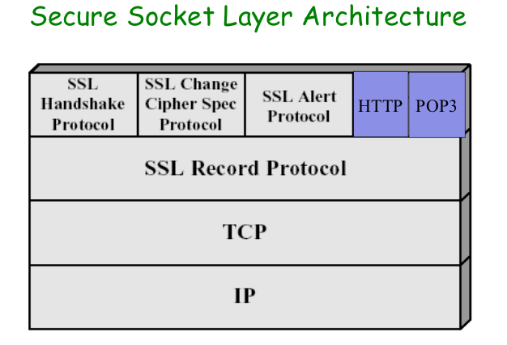
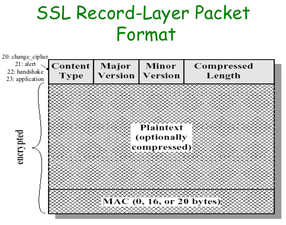
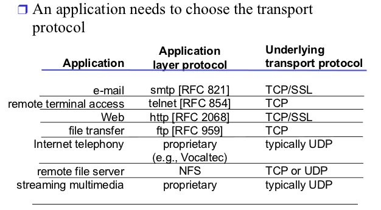
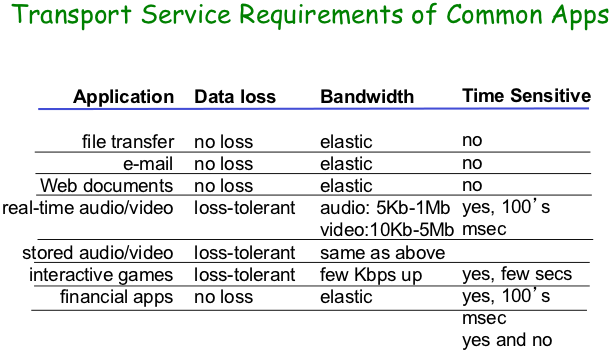
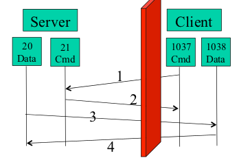
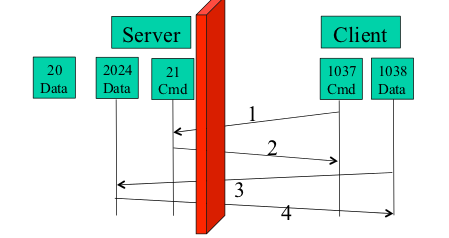
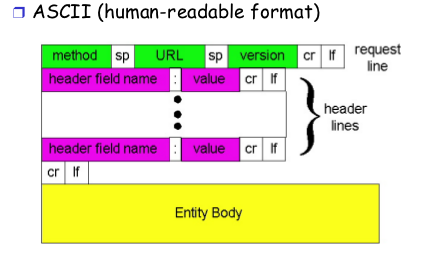
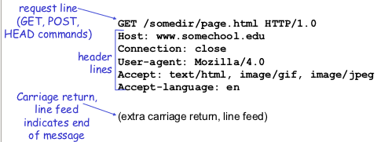
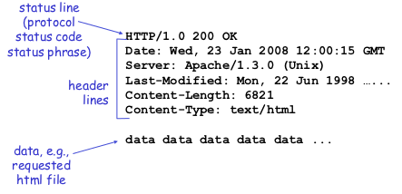
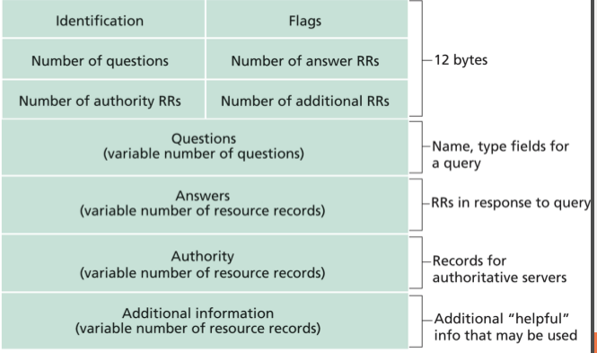

Network Applications:Overview, Email, Ftp
Secure Socket Layer: Services
- Server authentication
- Authentication through trusted certificate authority(CA):server obtains a certificate from one of the trusted CAs
- Data encryption and integrity
- Client authentication(optional)
Public-Key Algorithmsn
- Both public key and private key can be used to encode and decode
- One can generate public key from private key, but not in the other direction.
Properties
- D(E(P)) = P
- It is exceedingly difficult to deduce D from E
- E cannot be broken by a chosen plaintext attack
Examples
- Knapsack
- RSA
- Elliptic curves
Certification Authorities
- Certification authority(CA): binds public key to particular entity, E
- E(person, router) registers its public key with CA.
- E provides "proof of identity" to CA
- CA creates certificate binding E to its public key.
- Certificate contains E's public key digitally signed by CA — CA says "this is E's public key"
- When Alice wants Bob's public key
- Gets Bob's certificate
- Apply CA's public key to Bob's certificate, get Bob's public key.
A Certificate Contains
- Serial number(unique to issuer)
- Info about certificate owner, including algorithm and key value itself
- Info about certificate issuer
- valid dates
- digital signature by issuer


Application layer overview
Killer Applications
- 70s and 80s
- Text email, remote access, file transfers, newsgroups, text chat
- 90s
- WWW - surfing, search, e-commenrce
- At the end of millennium -IM, P2P file sharing
- New century
- Multimedia(YouTube, Flickr, Youku)
- Social networking(Facebook, Twitter, Weibo)
Conceptual + implementation aspects of network application protocols
Client server paradigm
Client
- Initiates contact with server("speaks first")
- Typically reuests service from server
- For Web, client is implemented in browser; for email, in mail reader
Server
- Provides reuested service to client, e.g. Web server sends requested Web page; mail server delivers e-mail.
Two questions to ask about a C-S application
- How does a client locate a server process?
- Is the application scalable, extensible,robust?
Peer to peer paradigm
Common application-layer protocols
- SMTP/POP
- HTTP
- FTP
- DNS
- P2P
What Transport Service Does an App Need?
- Data loss
- Some apps can to tolerate some packet losses
- Other apps require 100% reliable data transfer
- Bandwidth
- Some apps require minimum amount of bandwidth to be "effective"
- Other apps make use of whatever bandwidth they get
- Timing
- Some apps require low delay to be "effective"


Examples
Electronic Mail
Three major components
- User agents
- Mail servers
- Protocols
- Between mail servers: STMP
- Between mail server and user agent
- POP3:Post Office Protocol
- IMAP:Internet Mail Access Protocol
workflow
- HELO
- MAIL FROM
- RCPT TO
- DATA
- QUIT
Mail Message Format
SMTP: protocol for exchanging email msgs
RFC 822: standard for text message format
- Header line
- Body
- the "message", ASCII characters only
MIME: multimedia mail extention, RFC 2045, 2056
- Addictional lines in smg header declare MIMI content type
POP3 Protocol: Mail Access
Authorization phase
- Client commands:
- user: declare username
- pass: password
- Server responses
Transaction phase
- list: list message numbers
- retr: retrive message by number
- dele: delete
- quit
Positive
- Separate protocols for different functions
- Email retrieval(e.g. POP3, IMAP)
- Mail transmission(SMTP)
- Simple/basic request to implement basic control; fine-grain control through ASCII header and message body
- Make the protocol easy to read/debug/extend(analogy with end-to-end layered design)
- Status code in response makes message easy to parse
Negative
- Some design features which are missing
FTP: the File Transfer Protocol
Transfer files to/from remote host
FTP: RFC 959, server port 21(smtp 25, http 80)
- Two Parallel TCP connections opened
- Control: exchange commands, responses between client, server
- out of band control
- port 21 at server
- Data: file data to/from server
- FTP server maintains "state", e.g.
- Current directory
- Earlier authentication
Sample commands
- sent as ASCII text over control
- USER: username
- PASS: password
- PORT h1,h2,h3,h4,p1,p2: specifies the IP address and port the client receives its data
- LIST: return list of file in current
- RETR filename: retrieves(get) file
- STOR filename: stores file
Sample return codes
- 331 Username OK, password required
- 125 data connection already open; transfer
- 425 Can’t open data connection
- 452 Error writing file
Active Mode
- Server initiates data connection to the client's port

Passive Mode
- Server acks with a port number
- Client connects to server's data port

HTTP: hypertex transfer protocol
Web's application layer protocol
- HTTP uses TCP as transport service
- Client/server model
- Client: browser that requests, receives, "display" Web objects
- Server: Web server sends objects in response to requests
- Http 1.0: RFC 1945, HTTP 1.1: RFC 2068
Message flow
- Web server waiting for TCP connection at port 80(default)
- Client initiates TCP connection(creates socket) to server, port 80
- Server "accepts" connection, ack client and waits for request from clients
- Client sends request message(containing URL) into TCP connection socket for a document
- Web server receives request message, forms response message containing the document, and sends message into socket(slow-start).
- Web server closes TCP connection closed
- Client parses the document to find embedded objects(images)
- Repeat above for each image
HTTP Request Message: General Format


Http Response Message

Status Codes
In the first line of the response message.
- 200 OK
- request succeeded, requested object later in this message
- 301 Moved Permanently
- requested object moved, new location specified later in this message(Location:)
- 400 Bad Request
- request message not understood by server
- 404 Not Found
- requested document not found on this server
- 505 HTTP Version Not Supported
HTTP/1.0 Delay
- For each object
- TCP handshake — 1 RTT
- Client request and server responds — at least 1 RTT
Persistent HTTP
- Default to HTTP/1.1
- On same TCP connection: server parse request, responds, parse new request, ...
- Client sends requests for all referenced objects as soon as it receives base HTML
- Fewer RTTs
Browser Cache and Conditional GET
Goals: don't send object if client has up-to-date stored(cached) version
- client: specify date of cached copy in http request
- server: response contains no object if cached copy up-to-date
- HTTP/1.0 304 Not Modified
Keeping State: Cookies
Goal: no explicit application level session
- Server sends "cookie" to client in response msg
- Client presents cookie in later requests
- Server matches presented-cookie with server-stored info
- Authentication
- Remebering user preferences, previous choices
Authentication(401: authorization req.)
Goal: control access to server documents
- Stateless:client must present authorization in each request
- Authorization: typically name, password
- Authorization: header line in request
- If no authorization presented, server refuses access, sends WWW-authenticate: header line in response
- Browser caches name & password so that user does not have to repeatedly enter it.
DNS: Domain Name System(port 53)
Translate Machine Names to IPs
- etc/hosts
- OK for small networks
- Not scalable, up-to-date
- Conflicts
- DNS
How it works
- A distributed database managed by authoritative name servers
- Each zone has its own authoritative name servers
- An authoritative name server of a zone may delegate a subset (i.e. a sub-tree) of its zone to another name server
- The root zone is managed by the root name servers
- 13 root name servers worldwide
- Each name server knows the address of the root servers
- Each name server knows the address of its immediate children
Types of Queries
- Recursive query
- Put burden of name resolution on contacted names server, the contacted name server resolves the name completely
- Iterated query
- Contacted server relies with name of server to contact
- The hybrid case
DNS Records
DNS distributed db storing resource recors(RR)
- RR format: (name, type, value, ttl)
- Type = A
- name is hostname
- value is IP address
- Type = NS
- name is domain(e.g. yale.edu)
- value is the name of the authoritative name server for this domain
- Type = CNAME
- name is an alias name for some "canonical"(the real) name
- value is canonical name
- Type = MX
- value is hostname of mail server associated with name
- Type = SRV
DNS Protocol, Messages
Over UDP/TCP; query and reply messages,both with the same message format.

- identification: 16 bit # for query, the reply to a query uses the same #
- flags:
- Query or reply
- Recursion desired
- Recursion available
- Reply is authoritative
Observing DNS
dig +trace www.cnn.com
What DNS did Right?
- Hierachical delegation avoids central control, improve manageability and scalability
- Redundant servers improve robustness
- Caching reduces workload and improve robustness
Problems of DNS
- Domain names may not be the best way to name other resources, e.g. files
- Relatively static resource types make it hard to introduce new services or handle mobility
- Although theoretically you can update the values of the records, it is rarely enabled
- Simple query model make it hard to implement advanced query
- Early binding (separation of DNS query from application query) does not work well in mobile, dynamic environments
- e.g. load balancing, locate the nearest printer